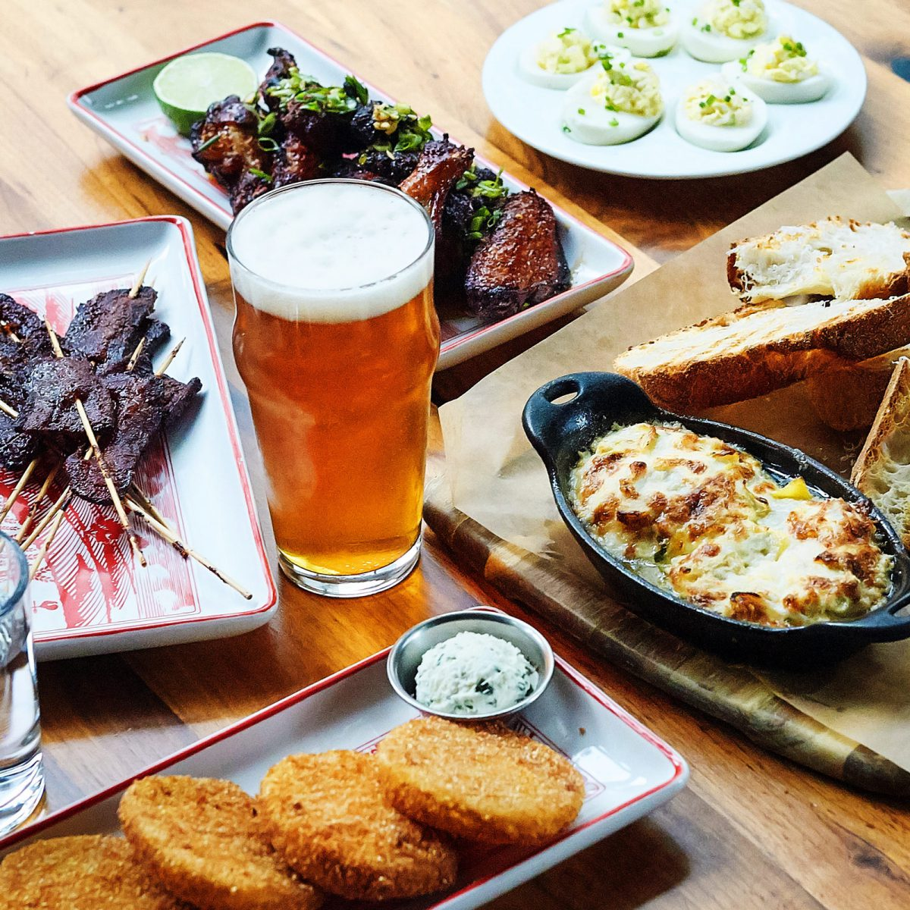
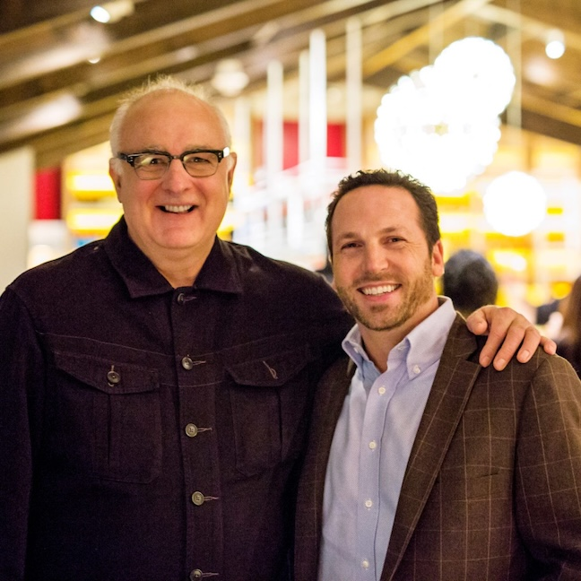

At Founding Farmers, Everything Matters. Nothing is too small. If something can be made better, smarter, healthier, that’s how we want to do it.
Join us at one of our locations below!Here you will find our various menus! We are dedicated to serving high-quality, real food with an emphasis on cooking from scratch. We bake our own bread, grind our own beef in-house, churn our own ice cream, and distill our own booze.
Reserve your table or come on in. Our full menus are available for weekday breakfast, lunch, dinner, and weekend brunch.
Open Table ReservationsFor us, Everything is Personal. We are led by restaurateurs, Michael Vucurevich and Dan Simons, in partnership with Mark Watne, farmer and President of the North Dakota Farmers Union, and the more than 50,000 American family farmers who majority own our restaurants. We thoughtfully source all of our ingredients. We have active recycling and composting programs that divert about 90% of our waste from landfills. We design and operate sustainable restaurants. We earn LEED and Green Restaurant Association certifications. We started a nonprofit – Our Last Straw – to expand our sustainability efforts beyond the walls of our restaurants. EVERYTHING we serve, all of our food and drink, is made from scratch in our restaurants. Our Co-Owner Michael Vucurevich (known as Mike V.) and Chef Joe Goetze are continually developing our menus, crafting new and delicious ways to serve our guests, starting with simple, high-quality ingredients.We opened our first restaurant in 2008 on Pennsylvania Avenue just a few blocks from the White House, with a mission to take people back to the source, to enjoy food that is grown, raised, and harvested on family farms across our region and our nation. 